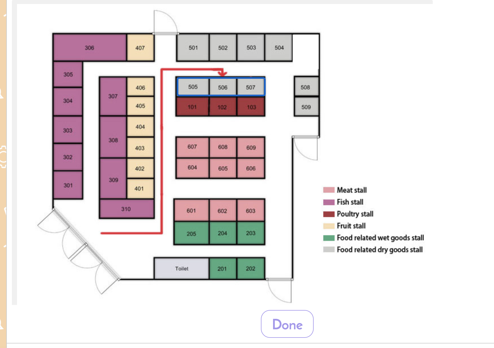
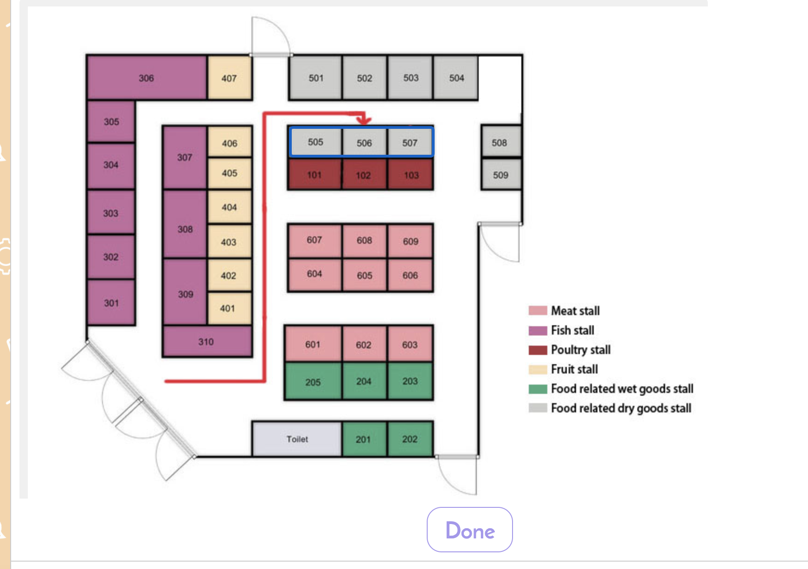

Aayush Shrestha
Designing Human-Robot Interaction with Botkit chatbot
Team members:
This project aims to develop a system where users are able to shop much more efficently
in local markets through incorporating Botkit chatbot.
The goal is to apply the concept of design process introduced in the lectures and gain hands-on
experience through this project. We aim to resolve the needs stressed by disabled, foreign and senior citizens.
Our learning and execution process
Empathize
Brainstorm
Our brainstorming resulted in grocery shopping in Hong Kong wet markets. This is because many of the Hong Kong population rely on these markets for food as they are cheaper, reliable and very popular. As some of us in the group are not familiar with Cantonese or mandarin, we have found it tedious to navigate through the dense market filled with various satisfactory items. Moreover, we realised that the prominent supermarkets such as Wellcome and ParknShop are very organised concerning layouts due to being well-funded. Therefore we concluded that the Wet markets, despite being cheap and practical for everyone in Hong Kong, is exhausting to shop thanks to the huge language barrier and along with the not so friendly directions illustrated by signs and paper maps.
Interpret
Observation
We went to actual wet markets to get hands-on experience when walking around the complicated maze-like design.
We took picture of different markets to study the different architecture that complicate many foreign, hearing-impaired and old citizens.
| Location | Observation | Image |
|---|---|---|
| Super market | -The map is separated into multiple sector by catorigeries -Only give a general idea of where the item is located but not precise position -At the correct area there are many sub columns -Finding a specific item is hard with that map. |
  |
| Wet market | -The indicator have no graphical presentation on the floor plan layout -Multiple stores are selling same type of goods, but in different location, customer need to spent long time to explore the whole market and compare the quality and price |
 |
| Night market | -No real map or layout to guide customers -Stores are clustered and other customers may block the user in finding what they want. -Each store does not have a banner or title meaning customers have to look at the items specifically |
  |
POV
| User | Needs/Problems | Insights |
|---|---|---|
| Customer: -Seldom go to market -Shy -Never cook before |
-Do not know where the required item is located and waste a long time to try finding it -Do not even know the exact name of the item they want -Do not even know what they need for perform certain task(e.g. cooking) -Do not prefer social interaction -Not sure if the store have the required item in stock |
-Path finder that gives the shortest path -Give suggestion to identify what the user want exactly -Provided with a dish name, give a list of all the required ingredients -Talk to chatbot which is no one -Price comparsion |
| Shopkeeper -Willing to maximize profit -May not be familiar with another language |
-Need to guild the customer to correct location without leaving the post -Need to verbally explain the route -Promote the goods to customer as much as possible -Cannot communicate with foreigner |
-Using graphic to illustrate, instead of using verbal communication -Show promotion, discount as suggestion to user |
Ideate
We looked at existing platforms such as Google Maps, and concluded there is a gap for providing locations of specific stalls in local markets. The local wet or night markets are very popular among Hong Kong citizens due to the reliability and cheap prices. Moreover there is a need for users to compare shopping items all in one app instead of having to switch through different specific super market brand application.
Google Maps
Does not aid in finding stalls in the dense local markets found in Hong Kong.
Super Market brand Apps
Useful for the supermaket the app is built for however is tedious to compare prices between different markets since you would have to shuffle through all the applications.
Verify
StoryBoarding
We used storyboards to illustrate the interaction that would occur between the user and the app.
-
Direction feature
-
Comparison feature


Prototype
Contribuition
For the development of this application, I was responsible for coding the direction feature. I constructed two approaches for generating the map that will help guide users to the designated stall or provide users with the best route.
For the first approach, I implemented an algorithim where the list of items wanted is observed and depending on the items listed, a map will be generated with the fastest route to collect all the items in one go.
For the second approach, the user is provided with a map which features stalls that users can click on. The map will be reloaded with
arrows drawn indicating the fastest route to the specified stall.
I used image mapping to ensure that users can interact with the map.
 

Reflection
From this project I gained valuable first-hand experience designing a chatbot, that I would not be able to get studying on my desk. This project was abit difficult compared to the 1st project, as creating a unique feature through incorporating chatbot was proven to be exhausting. However by learning to construct POV of potential users we were able to come up with an idea. My feelings concerning VR meetings and the design process remain the same as the last project development. Moreover, I learnt how to manage our time and coding workload as a group since in glitch we were able to code all at the same time. Coding at the same time may prove to be tedious and be more prone to error due to confliction however with us practicing paitence and organisation we were able to resolve this potential risk.
,-.
, ,-. ,-.
/ \ ( )-( )
\ | ,.>-( )-<
\|,' ( )-( )
Y ___`-' `-'
|/__/ `-'
|
|
| -hrr-
___|_____________